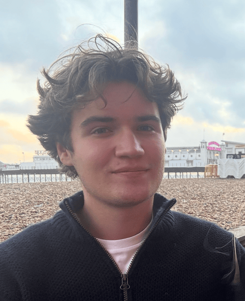

research systems / robotics
Bench-top VLA manipulation stack
A compact research stack for teleoperation, evaluation, replay, and failure review so robotics experiments are faster to inspect and easier to trust.
benji@stanford:~$ whoami
Benji Warburton
~/overview

I like work at the point where models, hardware, and evaluation all start to matter at once. Right now that means manipulation tooling, perception infrastructure, and experiments that need to survive contact with the real world.
~/experiences
Research Assistant working on end-to-end robotics systems across perception, data pipelines, and physical hardware.
current role
Building tooling for policy evaluation, operator review, and faster iteration around manipulation experiments.
also
Rise Fellow at Schmidt Futures, building a low-cost robotics kit and classroom software flow for younger students.
previously
Engineering intern at YASA, working with dyno test data and debugging workflows for motor testing.
~/current-classes
~/selected-classes
built a console from scratch on a RISC-V SBIC. programmed malloc, graphics drivers, I2C protocol. Learned a lot
put together a robot dog and taught it to walk with RL. Returned as a TA
made a robot to do winter olympics style curling. implemented mecanum drive on arduino from scratch
~/notes
ongoing
using a kinova gen3 arm and a swerve drive to make a robot to clean rooms
march 2026
performed supervised finetuning on 0.6B parameter LMs to optimise for tool calls
february 2026
made an app to stream lidar and camera data to a computer as virtual webcams
~/projects
research systems / robotics
A compact research stack for teleoperation, evaluation, replay, and failure review so robotics experiments are faster to inspect and easier to trust.
hardware / curriculum / software
A low-cost robotics kit and classroom software flow designed to make robotics approachable for younger students without making it feel toy-like.
performance engineering
A focused profiling sandbox for understanding where perception time actually goes across preprocessing, inference, and transport.